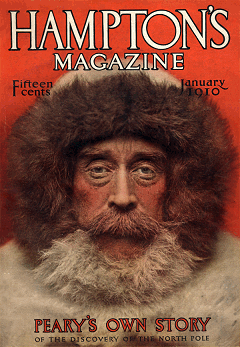
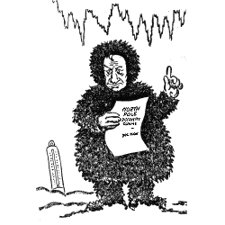
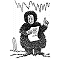
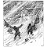
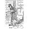
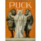
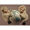
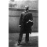
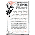

| |
|
|
|
|
|
|
 First installment of "Peary's Own Story." |
The published record of the Polar Controversy is really vast. Just the newspaper stories it generated between September and December 1909 in the two papers that backed the rival explorers amount to the equivalent of more than 1,000 typed pages. Published matter on the subject since then has been voluminous, ranging from tabloid journalism to the official records of the United States Congress. Some of the most important articles are the two ghosted series that appeared under Peary's and Cook's names in Hampton's Magazine in 1910-11.
 |
In addition to the printed word, the pictorial record is rich as well. Editorial cartoonists had a field day with the Polar Controversy, and hundreds of cartoons were drawn for the numerous newspapers then being published. Here is a small sample.

Other Memorabilia
The Polar Controversy was a long-running sensational story, and various entrepeneurs were quick to cash in on it. Therefore the ephemera of the Polar Controversy is plentiful and comes in all forms. There are pulp books, toys, medallions, pinbacks, and novelties of all sorts, such as the statuette of the two explorers wrestling over the Pole.
To describe it
all would be impossible, but
some of the more popular souvenirs were postcards. There were
many
humorous cards, and many commemorative ones, such as this common one .
There were also cards that depicted events
as they happened, such as this Danish card.
Another common item is promotional adds featuring Peary, who like
modern
sports stars did a seemingly endless series of endorsements of
everything
from pencils to long underwear.  |
 |
 |
 |
 |
 |
 |
| «- Artifacts Index | Physical Artifacts -» |